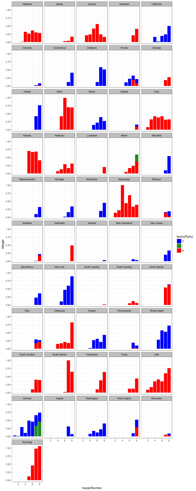
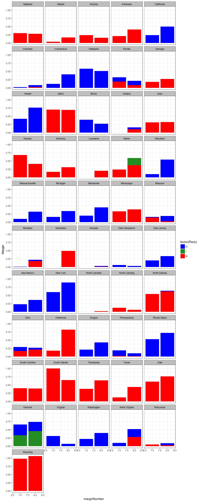
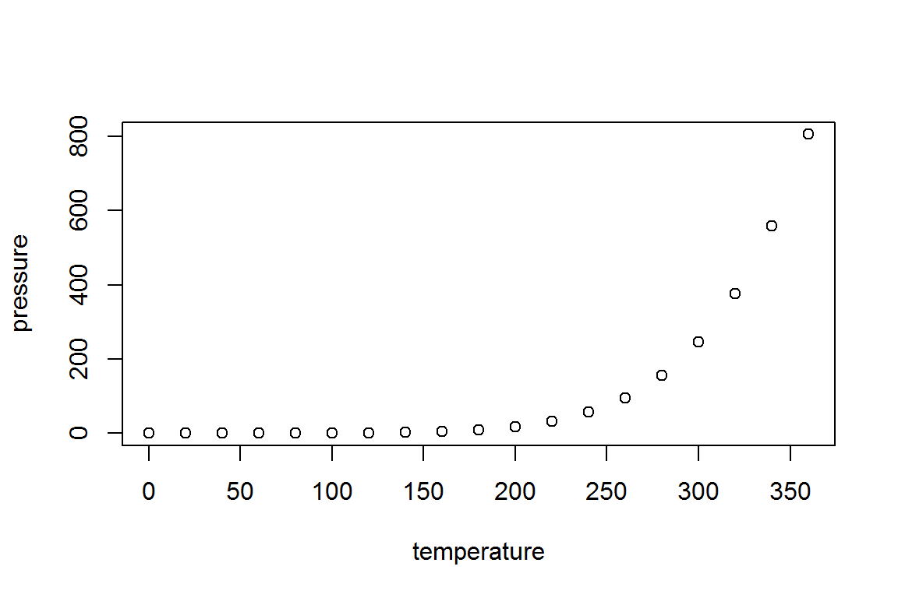

library(ggplot2)
library(dplyr)## Warning: package 'dplyr' was built under R version 3.4.1## Warning: Installed Rcpp (0.12.10) different from Rcpp used to build dplyr (0.12.11).
## Please reinstall dplyr to avoid random crashes or undefined behavior.##
## Attaching package: 'dplyr'## The following objects are masked from 'package:stats':
##
## filter, lag## The following objects are masked from 'package:base':
##
## intersect, setdiff, setequal, unionlibrary(tidyverse)## Loading tidyverse: tibble
## Loading tidyverse: tidyr
## Loading tidyverse: readr
## Loading tidyverse: purrr## Warning: package 'tibble' was built under R version 3.4.1## Conflicts with tidy packages ----------------------------------------------## filter(): dplyr, stats
## lag(): dplyr, statselection <- read.csv("C:/Users/Chris Iyer/Documents/election11.csv")
head(election)## Name State Party Year.Elected YrsInOffice
## 1 Leahy, Patrick Vermont D 1975 43
## 2 Hatch, Orrin Utah R 1977 41
## 3 Cochran, Thad Mississippi R 1978 40
## 4 Grassley, Chuck Iowa R 1981 37
## 5 McConnell, Mitch Kentucky R 1985 33
## 6 Shelby, Richard Alabama R 1987 31
## NumberOfElection PresidentMargin2016 marginNumber Margin
## 1 7 -0.264 1 0.03
## 2 7 0.179 1 0.00
## 3 7 0.178 1 0.00
## 4 6 0.094 1 0.00
## 5 5 0.298 1 0.00
## 6 5 0.277 1 0.00election1 <- election %>% filter(Margin > 0) %>% arrange(State)## Warning: package 'bindrcpp' was built under R version 3.4.1election1## Name State Party Year.Elected YrsInOffice
## 1 Shelby, Richard Alabama R 1987 31
## 2 Shelby, Richard Alabama R 1987 31
## 3 Shelby, Richard Alabama R 1987 31
## 4 Shelby, Richard Alabama R 1987 31
## 5 Shelby, Richard Alabama R 1987 31
## 6 Shelby, Richard Alabama R 1987 31
## 7 Murkowski, Lisa Alaska R 2002 16
## 8 Murkowski, Lisa Alaska R 2002 16
## 9 Murkowski, Lisa Alaska R 2002 16
## 10 Sullivan, Dan Alaska R 2015 3
## 11 McCain, John Arizona R 1987 31
## 12 McCain, John Arizona R 1987 31
## 13 McCain, John Arizona R 1987 31
## 14 McCain, John Arizona R 1987 31
## 15 McCain, John Arizona R 1987 31
## 16 McCain, John Arizona R 1987 31
## 17 Flake, Jeff Arizona R 2013 5
## 18 Boozman, John Arkansas R 2011 7
## 19 Boozman, John Arkansas R 2011 7
## 20 Cotton, Tom Arkansas R 2015 3
## 21 Feinstein, Dianne California D 1992 26
## 22 Feinstein, Dianne California D 1992 26
## 23 Feinstein, Dianne California D 1992 26
## 24 Feinstein, Dianne California D 1992 26
## 25 Feinstein, Dianne California D 1992 26
## 26 Harris, Kamala California D 2017 1
## 27 Bennet, Michael Colorado D 2009 9
## 28 Bennet, Michael Colorado D 2009 9
## 29 Gardner, Cory Colorado R 2015 3
## 30 Blumenthal, Richard Connecticut D 2011 7
## 31 Blumenthal, Richard Connecticut D 2011 7
## 32 Murphy, Chris Connecticut D 2013 5
## 33 Carper, Tom Delaware D 2001 17
## 34 Carper, Tom Delaware D 2001 17
## 35 Coons, Chris Delaware D 2010 8
## 36 Carper, Tom Delaware D 2001 17
## 37 Coons, Chris Delaware D 2010 8
## 38 Nelson, Bill Florida D 2001 17
## 39 Nelson, Bill Florida D 2001 17
## 40 Nelson, Bill Florida D 2001 17
## 41 Rubio, Marco Florida R 2011 7
## 42 Nelson, Bill Florida D 2001 17
## 43 Rubio, Marco Florida R 2011 7
## 44 Isakson, Johnny Georgia R 2005 13
## 45 Isakson, Johnny Georgia R 2005 13
## 46 Perdue, David Georgia R 2015 3
## 47 Schatz, Brian Hawaii D 2012 6
## 48 Schatz, Brian Hawaii D 2012 6
## 49 Hirono, Maizie Hawaii D 2013 5
## 50 Crapo, Mike Idaho R 1992 26
## 51 Crapo, Mike Idaho R 1992 26
## 52 Crapo, Mike Idaho R 1992 26
## 53 Risch, James Idaho R 2009 9
## 54 Crapo, Mike Idaho R 1992 26
## 55 Risch, James Idaho R 2009 9
## 56 Durbin, Dick Illinois D 1997 21
## 57 Durbin, Dick Illinois D 1997 21
## 58 Durbin, Dick Illinois D 1997 21
## 59 Durbin, Dick Illinois D 1997 21
## 60 Duckworth, Tammy Illinois D 2017 1
## 61 Donnelly, Joe Indiana D 2013 5
## 62 Young, Todd Indiana R 2017 1
## 63 Grassley, Chuck Iowa R 1981 37
## 64 Grassley, Chuck Iowa R 1981 37
## 65 Grassley, Chuck Iowa R 1981 37
## 66 Grassley, Chuck Iowa R 1981 37
## 67 Grassley, Chuck Iowa R 1981 37
## 68 Grassley, Chuck Iowa R 1981 37
## 69 Grassley, Chuck Iowa R 1981 37
## 70 Ernst, Joni Iowa R 2015 3
## 71 Roberts, Pat Kansas R 1997 21
## 72 Roberts, Pat Kansas R 1997 21
## 73 Roberts, Pat Kansas R 1997 21
## 74 Moran, Jerry Kansas R 2011 7
## 75 Roberts, Pat Kansas R 1997 21
## 76 Moran, Jerry Kansas R 2011 7
## 77 McConnell, Mitch Kentucky R 1985 33
## 78 McConnell, Mitch Kentucky R 1985 33
## 79 McConnell, Mitch Kentucky R 1985 33
## 80 McConnell, Mitch Kentucky R 1985 33
## 81 Paul, Rand Kentucky R 2011 7
## 82 McConnell, Mitch Kentucky R 1985 33
## 83 Paul, Rand Kentucky R 2011 7
## 84 Cassidy, Bill Louisiana R 2015 3
## 85 Kennedy, John Louisiana R 2017 1
## 86 Collins, Susan Maine R 1997 21
## 87 Collins, Susan Maine R 1997 21
## 88 Collins, Susan Maine R 1997 21
## 89 Collins, Susan Maine R 1997 21
## 90 King, Angus Maine I 2013 5
## 91 Cardin, Ben Maryland D 2007 11
## 92 Cardin, Ben Maryland D 2007 11
## 93 Van Hollen, Chris Maryland D 2017 1
## 94 Markey, Edward Massachusetts D 2013 5
## 95 Warren, Elizabeth Massachusetts D 2013 5
## 96 Markey, Edward Massachusetts D 2013 5
## 97 Stabenow, Debbie Michigan D 2001 17
## 98 Stabenow, Debbie Michigan D 2001 17
## 99 Stabenow, Debbie Michigan D 2001 17
## 100 Peters, Gary Michigan D 2015 3
## 101 Klobuchar, Amy Minnesota D 2007 11
## 102 Klobuchar, Amy Minnesota D 2007 11
## 103 Franken, Al Minnesota D 2009 9
## 104 Cochran, Thad Mississippi R 1978 40
## 105 Cochran, Thad Mississippi R 1978 40
## 106 Cochran, Thad Mississippi R 1978 40
## 107 Cochran, Thad Mississippi R 1978 40
## 108 Cochran, Thad Mississippi R 1978 40
## 109 Cochran, Thad Mississippi R 1978 40
## 110 Wicker, Roger Mississippi R 2007 11
## 111 Cochran, Thad Mississippi R 1978 40
## 112 Wicker, Roger Mississippi R 2007 11
## 113 McCaskill, Claire Missouri D 2007 11
## 114 Blunt, Roy Missouri R 2011 7
## 115 McCaskill, Claire Missouri D 2007 11
## 116 Blunt, Roy Missouri R 2011 7
## 117 Tester, Jon Montana D 2007 11
## 118 Tester, Jon Montana D 2007 11
## 119 Daines, Steve Montana R 2015 3
## 120 Fischer, Deb Nebraska R 2013 5
## 121 Sasse, Ben Nebraska R 2015 3
## 122 Heller, Dean Nevada R 2011 7
## 123 Cortez Masto, Catherine Nevada D 2017 1
## 124 Shaheen, Jeanne New Hampshire D 2009 9
## 125 Shaheen, Jeanne New Hampshire D 2009 9
## 126 Menendez, Bob New Jersey D 2006 12
## 127 Booker, Cory New Jersey D 2013 5
## 128 Menendez, Bob New Jersey D 2006 12
## 129 Booker, Cory New Jersey D 2013 5
## 130 Udall, Tom New Mexico D 2009 9
## 131 Udall, Tom New Mexico D 2009 9
## 132 Heinrich, Martin New Mexico D 2013 5
## 133 Schumer, Chuck New York D 1992 26
## 134 Schumer, Chuck New York D 1992 26
## 135 Schumer, Chuck New York D 1992 26
## 136 Gillibrand, Kirsten New York D 2009 9
## 137 Schumer, Chuck New York D 1992 26
## 138 Gillibrand, Kirsten New York D 2009 9
## 139 Tillis, Tom North Carolina R 2015 3
## 140 Burr, Richard North Caroling R 2005 13
## 141 Burr, Richard North Caroling R 2005 13
## 142 Burr, Richard North Caroling R 2005 13
## 143 Hoeven, John North Dakota R 2011 7
## 144 Hoeven, John North Dakota R 2011 7
## 145 Heitkamp, Heidi North Dakota D 2013 5
## 146 Brown, Sherrod Ohio D 2007 11
## 147 Portman, Rob Ohio R 2011 7
## 148 Brown, Sherrod Ohio D 2007 11
## 149 Portman, Rob Ohio R 2011 7
## 150 Inhofe, Jim Oklahoma R 1994 24
## 151 Inhofe, Jim Oklahoma R 1994 24
## 152 Inhofe, Jim Oklahoma R 1994 24
## 153 Inhofe, Jim Oklahoma R 1994 24
## 154 Inhofe, Jim Oklahoma R 1994 24
## 155 Lankford, James Oklahoma R 2015 3
## 156 Wyden, Ron Oregon D 1996 22
## 157 Wyden, Ron Oregon D 1996 22
## 158 Wyden, Ron Oregon D 1996 22
## 159 Wyden, Ron Oregon D 1996 22
## 160 Merkley, Jeff Oregon D 2009 9
## 161 Wyden, Ron Oregon D 1996 22
## 162 Merkley, Jeff Oregon D 2009 9
## 163 Casey, Bob Pennsylvania D 2007 11
## 164 Toomey, Pat Pennsylvania R 2011 7
## 165 Casey, Bob Pennsylvania D 2007 11
## 166 Toomey, Pat Pennsylvania R 2011 7
## 167 Reed, Jack Rhode Island D 1997 21
## 168 Reed, Jack Rhode Island D 1997 21
## 169 Reed, Jack Rhode Island D 1997 21
## 170 Whitehouse Rhode Island D 2007 11
## 171 Reed, Jack Rhode Island D 1997 21
## 172 Whitehouse Rhode Island D 2007 11
## 173 Graham, Lindsey South Carolina R 2003 15
## 174 Graham, Lindsey South Carolina R 2003 15
## 175 Scott, Timothy South Carolina R 2013 5
## 176 Graham, Lindsey South Carolina R 2003 15
## 177 Scott, Timothy South Carolina R 2013 5
## 178 Thune, John South Dakota R 2005 13
## 179 Thune, John South Dakota R 2005 13
## 180 Thune, John South Dakota R 2005 13
## 181 Rounds, Mike South Dakota R 2015 3
## 182 Alexander, Lamar Tennessee R 2003 15
## 183 Alexander, Lamar Tennessee R 2003 15
## 184 Corker, Bob Tennessee R 2007 11
## 185 Alexander, Lamar Tennessee R 2003 15
## 186 Corker, Bob Tennessee R 2007 11
## 187 Cornyn, John Texas R 2003 15
## 188 Cornyn, John Texas R 2003 15
## 189 Cornyn, John Texas R 2003 15
## 190 Cruz, Ted Texas R 2013 5
## 191 Hatch, Orrin Utah R 1977 41
## 192 Hatch, Orrin Utah R 1977 41
## 193 Hatch, Orrin Utah R 1977 41
## 194 Hatch, Orrin Utah R 1977 41
## 195 Hatch, Orrin Utah R 1977 41
## 196 Hatch, Orrin Utah R 1977 41
## 197 Lee, Mike Utah R 2011 7
## 198 Hatch, Orrin Utah R 1977 41
## 199 Lee, Mike Utah R 2011 7
## 200 Leahy, Patrick Vermont D 1975 43
## 201 Leahy, Patrick Vermont D 1975 43
## 202 Leahy, Patrick Vermont D 1975 43
## 203 Leahy, Patrick Vermont D 1975 43
## 204 Leahy, Patrick Vermont D 1975 43
## 205 Leahy, Patrick Vermont D 1975 43
## 206 Leahy, Patrick Vermont D 1975 43
## 207 Sanders, Bernie Vermont I 2007 11
## 208 Leahy, Patrick Vermont D 1975 43
## 209 Sanders, Bernie Vermont I 2007 11
## 210 Warner, Mark Virginia D 2009 9
## 211 Warner, Mark Virginia D 2009 9
## 212 Kaine, Tim Virginia D 2013 5
## 213 Murray, Patty Washington D 1993 25
## 214 Murray, Patty Washington D 1993 25
## 215 Murray, Patty Washington D 1993 25
## 216 Murray, Patty Washington D 1993 25
## 217 Cantwell, Maria Washington D 2001 17
## 218 Murray, Patty Washington D 1993 25
## 219 Cantwell, Maria Washington D 2001 17
## 220 Manchin, Joe West Virginia D 2010 8
## 221 Manchin, Joe West Virginia D 2010 8
## 222 Capito, Shelley West Virginia R 2015 3
## 223 Johnson, Ron Wisconsin R 2011 7
## 224 Johnson, Ron Wisconsin R 2011 7
## 225 Baldwin, Tammy Wisconsin D 2013 5
## 226 Enzi, Mike Wyoming R 1997 21
## 227 Enzi, Mike Wyoming R 1997 21
## 228 Enzi, Mike Wyoming R 1997 21
## 229 Barrasso, John Wyoming R 2007 11
## 230 Enzi, Mike Wyoming R 1997 21
## 231 Barrasso, John Wyoming R 2007 11
## NumberOfElection PresidentMargin2016 marginNumber Margin
## 1 5 0.2770 3 0.01
## 2 5 0.2770 4 0.32
## 3 5 0.2770 5 0.26
## 4 5 0.2770 6 0.36
## 5 5 0.2770 7 0.30
## 6 5 0.2770 8 0.28
## 7 3 0.1470 6 0.03
## 8 3 0.1470 7 0.04
## 9 3 0.1470 8 0.15
## 10 1 0.1470 8 0.02
## 11 5 0.0350 3 0.21
## 12 5 0.0350 4 0.24
## 13 5 0.0350 5 0.42
## 14 5 0.0350 6 0.56
## 15 5 0.0350 7 0.24
## 16 5 0.0350 8 0.13
## 17 1 0.0355 8 0.03
## 18 2 0.2692 7 0.21
## 19 2 0.2692 8 0.24
## 20 1 0.2692 8 0.17
## 21 4 -0.3000 4 0.16
## 22 4 -0.3000 5 0.02
## 23 4 -0.3000 6 0.19
## 24 4 -0.3000 7 0.24
## 25 4 -0.3000 8 0.25
## 26 1 -0.3000 8 0.25
## 27 2 -0.0490 7 0.02
## 28 2 -0.0490 8 0.06
## 29 1 -0.0490 8 0.02
## 30 2 -0.1364 7 0.12
## 31 2 -0.1364 8 0.29
## 32 1 -0.1370 8 0.12
## 33 3 -0.1140 6 0.12
## 34 3 -0.1140 7 0.41
## 35 2 -0.1140 7 0.17
## 36 3 -0.1140 8 0.37
## 37 2 -0.1140 8 0.14
## 38 3 0.0120 5 0.11
## 39 3 0.0120 6 0.22
## 40 3 0.0120 7 0.13
## 41 2 0.0012 7 0.19
## 42 3 0.0120 8 0.13
## 43 2 0.0012 8 0.08
## 44 2 0.0510 7 0.18
## 45 2 0.0510 8 0.19
## 46 1 0.0510 8 0.08
## 47 2 -0.3218 7 0.42
## 48 2 -0.3218 8 0.51
## 49 1 -0.3218 8 0.25
## 50 4 0.3170 5 0.42
## 51 4 0.3170 6 0.99
## 52 4 0.3170 7 0.46
## 53 2 0.3170 7 0.24
## 54 4 0.3170 8 0.38
## 55 2 0.3170 8 0.31
## 56 3 -0.1680 5 0.15
## 57 3 -0.1680 6 0.22
## 58 3 -0.1680 7 0.39
## 59 3 -0.1680 8 0.11
## 60 1 -0.1680 8 0.16
## 61 1 0.1890 8 0.06
## 62 1 0.1890 8 0.10
## 63 6 0.0940 2 0.08
## 64 6 0.0940 3 0.32
## 65 6 0.0940 4 0.42
## 66 6 0.0940 5 0.38
## 67 6 0.0940 6 0.42
## 68 6 0.0940 7 0.31
## 69 6 0.0940 8 0.24
## 70 1 0.0940 8 0.08
## 71 3 0.2050 5 0.70
## 72 3 0.2050 6 0.67
## 73 3 0.2050 7 0.24
## 74 2 0.2050 7 0.44
## 75 3 0.2050 8 0.11
## 76 2 0.2050 8 0.30
## 77 5 0.2980 4 0.07
## 78 5 0.2980 5 0.13
## 79 5 0.2980 6 0.29
## 80 5 0.2980 7 0.06
## 81 2 0.2984 7 0.11
## 82 5 0.2980 8 0.16
## 83 2 0.2984 8 0.15
## 84 1 0.1970 8 0.12
## 85 1 0.1964 8 0.08
## 86 3 -0.0290 5 0.05
## 87 3 -0.0290 6 0.17
## 88 3 -0.0290 7 0.24
## 89 3 -0.0290 8 0.37
## 90 1 -0.0290 8 0.22
## 91 2 -0.2640 7 0.10
## 92 2 -0.2640 8 0.30
## 93 1 -0.2640 8 0.24
## 94 1 -0.2720 7 0.10
## 95 1 -0.2720 8 0.08
## 96 1 -0.2720 8 0.24
## 97 3 0.0030 6 0.02
## 98 3 0.0030 7 0.16
## 99 3 0.0030 8 0.21
## 100 1 0.0030 8 0.13
## 101 2 -0.0150 7 0.20
## 102 2 -0.0150 8 0.35
## 103 2 -0.0150 8 0.10
## 104 7 0.1780 2 0.14
## 105 7 0.1780 3 0.22
## 106 7 0.1780 4 1.00
## 107 7 0.1780 5 0.44
## 108 7 0.1780 6 0.69
## 109 7 0.1780 7 0.23
## 110 2 0.1780 7 0.10
## 111 7 0.1780 8 0.22
## 112 2 0.1780 8 0.17
## 113 2 0.1850 7 0.02
## 114 2 0.1864 7 0.14
## 115 2 0.1850 8 0.16
## 116 2 0.1864 8 0.03
## 117 2 0.2020 7 0.01
## 118 2 0.2020 8 0.04
## 119 1 0.2020 8 0.18
## 120 1 0.2500 8 0.16
## 121 1 0.2500 8 0.33
## 122 1 -0.0242 8 0.01
## 123 1 -0.0242 8 0.02
## 124 2 -0.0030 7 0.06
## 125 2 -0.0030 8 0.03
## 126 2 -0.1400 7 0.09
## 127 1 -0.1410 7 0.11
## 128 2 -0.1400 8 0.19
## 129 1 -0.1410 8 0.14
## 130 2 -0.0830 7 0.23
## 131 2 -0.0830 8 0.11
## 132 1 -0.0830 8 0.25
## 133 4 -0.2250 5 0.11
## 134 4 -0.2250 6 0.47
## 135 4 -0.2250 7 0.32
## 136 2 -0.2250 7 0.28
## 137 4 -0.2250 8 0.43
## 138 2 -0.2250 8 0.46
## 139 1 0.0360 8 0.02
## 140 2 0.0360 6 0.05
## 141 2 0.0360 7 0.12
## 142 2 0.0360 8 0.06
## 143 2 0.3573 7 0.54
## 144 2 0.3573 8 0.62
## 145 1 0.3573 8 0.02
## 146 2 0.0810 7 0.12
## 147 2 0.0810 7 0.17
## 148 2 0.0810 8 0.06
## 149 2 0.0810 8 0.21
## 150 4 0.3640 4 0.15
## 151 4 0.3640 5 0.17
## 152 4 0.3640 6 0.21
## 153 4 0.3640 7 0.18
## 154 4 0.3640 8 0.39
## 155 1 0.3640 8 0.43
## 156 4 -0.1100 4 0.02
## 157 4 -0.1100 5 0.27
## 158 4 -0.1100 6 0.31
## 159 4 -0.1100 7 0.18
## 160 2 -0.1100 7 0.03
## 161 4 -0.1100 8 0.24
## 162 2 -0.1100 8 0.19
## 163 2 0.0070 7 0.17
## 164 2 0.0072 7 0.02
## 165 2 0.0070 8 0.09
## 166 2 0.0072 8 0.01
## 167 3 -0.1550 5 0.28
## 168 3 -0.1550 6 0.57
## 169 3 -0.1550 7 0.46
## 170 2 -0.1550 7 0.07
## 171 3 -0.1550 8 0.42
## 172 2 -0.1550 8 0.30
## 173 2 0.1420 6 0.10
## 174 2 0.1420 7 0.16
## 175 2 0.1427 7 0.24
## 176 2 0.1420 8 0.15
## 177 2 0.1427 8 0.24
## 178 2 0.2980 6 0.02
## 179 2 0.2980 7 1.00
## 180 2 0.2980 8 0.44
## 181 1 0.2980 8 0.21
## 182 2 0.2600 6 0.10
## 183 2 0.2600 7 0.35
## 184 2 0.2600 7 0.03
## 185 2 0.2600 8 0.30
## 186 2 0.2600 8 0.34
## 187 2 0.0900 6 0.12
## 188 2 0.0900 7 0.12
## 189 2 0.0900 8 0.28
## 190 1 0.2980 8 0.16
## 191 7 0.1790 2 0.09
## 192 7 0.1790 3 0.17
## 193 7 0.1790 4 0.35
## 194 7 0.1790 5 0.41
## 195 7 0.1790 6 0.35
## 196 7 0.1790 7 0.31
## 197 2 0.1790 7 0.29
## 198 7 0.1790 8 0.35
## 199 2 0.1790 8 0.41
## 200 7 -0.2640 1 0.03
## 201 7 -0.2640 2 0.01
## 202 7 -0.2640 3 0.29
## 203 7 -0.2640 4 0.11
## 204 7 -0.2640 5 0.49
## 205 7 -0.2640 6 0.46
## 206 7 -0.2640 7 0.33
## 207 2 -0.2640 7 0.33
## 208 7 -0.2640 8 0.28
## 209 2 -0.2640 8 0.46
## 210 2 -0.0540 7 0.31
## 211 2 -0.0540 8 0.01
## 212 1 -0.0540 8 0.06
## 213 4 -0.1570 4 0.08
## 214 4 -0.1570 5 0.17
## 215 4 -0.1570 6 0.12
## 216 4 -0.1570 7 0.05
## 217 3 -0.1570 7 0.17
## 218 4 -0.1570 8 0.20
## 219 3 -0.1570 8 0.20
## 220 2 0.4270 7 0.10
## 221 2 0.4270 8 0.24
## 222 1 0.4207 8 0.28
## 223 2 0.0076 7 0.05
## 224 2 0.0076 8 0.03
## 225 1 0.0076 8 0.06
## 226 3 0.4630 5 0.12
## 227 3 0.4630 6 0.46
## 228 3 0.4630 7 0.51
## 229 2 0.4630 7 0.47
## 230 3 0.4630 8 0.54
## 231 2 0.4630 8 0.52val = c("#E41A1C", "#377EB8", "chartreuse4")
lab = c("Republican", "Democrat", "Independent")
electionsPlot <- ggplot(election1, aes(x = marginNumber, y = Margin, group = factor(Party),fill = factor(Party),))
electionsPlot + geom_bar(stat = "identity") + facet_wrap(~State, ncol = 5) + theme(axis.text.x = element_text(angle = 90, hjust = 1)) + theme_bw()+
theme(strip.background =element_rect(fill="grey"))+
theme(strip.text = element_text(colour = 'Black'))+ scale_fill_manual(values=c("blue", "forestgreen", "red")) 
election2 <- election %>% filter(marginNumber >= 7) %>% arrange(State)
electionsPlot <- ggplot(election2, aes(x = marginNumber, y = Margin, group = factor(Party),fill = factor(Party),))
electionsPlot + geom_bar(stat = "identity") + facet_wrap(~State, ncol = 5) + theme(axis.text.x = element_text(angle = 90, hjust = 1)) + theme_bw()+
theme(strip.background =element_rect(fill="grey"))+
theme(strip.text = element_text(colour = 'Black'))+ scale_fill_manual(values=c("blue", "forestgreen", "red")) 
This is an R Markdown document. Markdown is a simple formatting syntax for authoring HTML, PDF, and MS Word documents. For more details on using R Markdown see http://rmarkdown.rstudio.com.
When you click the Knit button a document will be generated that includes both content as well as the output of any embedded R code chunks within the document. You can embed an R code chunk like this:
summary(cars)## speed dist
## Min. : 4.0 Min. : 2.00
## 1st Qu.:12.0 1st Qu.: 26.00
## Median :15.0 Median : 36.00
## Mean :15.4 Mean : 42.98
## 3rd Qu.:19.0 3rd Qu.: 56.00
## Max. :25.0 Max. :120.00You can also embed plots, for example:

Note that the echo = FALSE parameter was added to the code chunk to prevent printing of the R code that generated the plot.